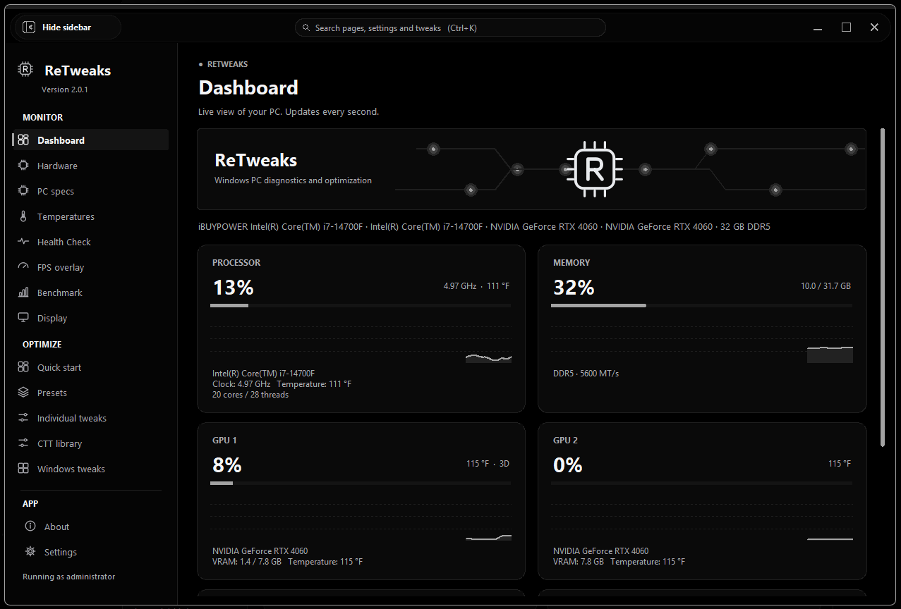

Hardware & live data
Exact GPU name from the driver, 64-bit VRAM via DirectX, live GPU load from the same counters Task Manager uses, real CPU clock, disk health, monitors, audio. Temps and fans read from LibreHardwareMonitor when you run it.
RETWEAKS shows what your PC is actually doing, applies Windows and game tweaks you can undo, and never reports a number it didn't measure. One file. No installer.
What's inside
Hardware detection works for every brand. Anything Windows can't report shows "Unavailable" instead of a made-up value.
Exact GPU name from the driver, 64-bit VRAM via DirectX, live GPU load from the same counters Task Manager uses, real CPU clock, disk health, monitors, audio. Temps and fans read from LibreHardwareMonitor when you run it.
53 tweaks across Gaming, Privacy, Interface, Services and Maintenance, with a search box. Every one explains what it does and the trade-off, shows its current state, saves the original value first, and offers Undo and Undo everything.
Real FPS and 1% / 0.1% lows with Intel PresentMon. A click-through in-game FPS overlay with its own built-in frame counter, no PresentMon needed. Nothing is ever injected into a game process.
Low, High, Ultra and Ultra Performance presets for Fortnite, Minecraft Java, Minecraft Bedrock, Apex Legends and Rocket League. Config files are backed up first, only existing keys change, and nothing runs while the game is open.
Esports, Max FPS, Balanced, Low-end PC, High quality, Ultra quality, Streamer and Privacy. Preview shows only the changes that would actually happen. Per-program GPU preference, CPU priority and auto game mode.
Choose your own DNS per adapter, with presets, custom IPv4/IPv6, and an Automatic option. DNS speed test with real lookup times. Ping tests against 1.1.1.1 / 1.0.0.1.
A built-in browser on Microsoft's Edge engine: tabs, private tabs, bookmarks, history, downloads, your choice of search engine, and a start page that follows your theme. It starts only when you open the page.
Master, per-app and microphone volume and mute, output and input device switching, and a volume lock that puts the level back within half a second if another app changes it.
Stretched resolution per monitor with a 15-second Keep test, Health Check, startup apps with restore, Storage Explorer and cleanup with preview, sensor logging to CSV, auto clicker with emergency stop, Gemini AI Assistant with your own key, Discord status, in-app updates.
Screenshot
A real screenshot from the owner's PC, not a mockup. Every number on it was read live from Windows at the moment it was taken. The build shown is the in-development version, so some labels may differ from the current release.

Interactive demo
A working mini Dashboard fed with real readings your browser can take right now. A website can't see CPU load, temperatures or VRAM the way the app does, so those show "Unavailable", the same rule the app follows. Click the sidebar.
In the app, every card shows the real number: CPU load and live clock from Windows counters, GPU load from the same counters Task Manager uses, temperatures from LibreHardwareMonitor.
Not detectable by a website: CPU model, RAM size and speed, motherboard, BIOS, drives, monitors' names, audio devices. The app's Hardware page shows all of them, or "Unavailable" when Windows can't report one.
The Tweaks page lists every tweak with its current state, what it changes, the trade-off, whether it needs admin, and its own Undo. Try the flow with a real tweak in the How a tweak works preview below.
Interactive preview
This is a preview of one real tweak from the Tweaks page, so you can see the flow. Flipping it here changes nothing on your PC; only the app does that.
Turns Windows Game Mode on or off, the same switch as Settings → Gaming → Game Mode. Trade-off: on some systems Game Mode lowers FPS, so RETWEAKS never forces it on.
Live on this page
These are the 13 built-in RETWEAKS themes with their exact colors. Pick one and this whole site switches to it. Galaxy brings its starfield. The theme maker in the app lets you build your own from 10 colors and share it as a code.
Paste it in RETWEAKS under Settings → Appearance → Theme maker → Import. It's the same RET1- format the app exports, with the built-in theme's colors under a new name so it imports as your own copy.
No guesswork
Each number on the Hardware and Dashboard pages has a named Windows source. If that source isn't available on your PC, the reading says Unavailable.
| Reading | Source | Note |
|---|---|---|
| GPU name and VRAM | DirectX (DXGI) DedicatedVideoMemory | 64-bit value, every GPU brand. The old WMI value caps at about 4 GB, so it's never used. |
| GPU load, VRAM in use | Windows "GPU Engine" performance counters | The same source Task Manager uses. Works on non-English Windows. |
| Live CPU clock | Processor Frequency × % Processor Performance | The usual Python call only returns the base clock, so it isn't used. |
| NVIDIA temperature, clocks, power, fan | NVIDIA NVML | NVIDIA cards only. |
| CPU temperature, fans, motherboard sensors | LibreHardwareMonitor (optional) | Windows has no API for these without a kernel driver, which RETWEAKS does not ship. Without LHM: Unavailable. |
| Motherboard and BIOS | CIM Win32_BaseBoard, Win32_BIOS | Exact vendor and model as the firmware reports them. |
| Disk health | Get-PhysicalDisk status | SMART data only when the drive or driver exposes it. |
| Monitors and audio | WmiMonitorID, Qt, Win32_SoundDevice | Real monitor names, resolution and refresh rate. |
| Frame times (overlay) | Windows ETW present events | The data PresentMon reads. Measures time between frames, not display latency. |
| Power supply | Shown only if the system reports it | Most don't. Then: Unavailable. |
Changelog
Summaries of the real release notes. Full notes are on each GitHub release.
How it works
Get it
RETWEAKS.exe, RETWEAKS.zip (the same file zipped) and RETWEAKS.exe.sha256.RETWEAKS.exe and run it. There is no installer. It asks for administrator rights because several tweaks change system-wide settings..sha256 file. From then on the Update now bar at the top of the app installs new versions and verifies them for you.Windows SmartScreen may warn you. The .exe is not code-signed, so Windows or your antivirus can show a warning on first run. All source files are viewable on GitHub, and every release is built from the committed code by GitHub Actions on a Windows runner.
Requirements. Windows 10 or 11, 64-bit. Optional: LibreHardwareMonitor for CPU temperatures and fan speeds, Intel PresentMon for the FPS test, and your own Gemini API key for the AI Assistant (18+ per Google's terms).
Help
Ask on the Discord for quick help, or open the bug form on GitHub and describe what happened. If you want, copy the specs your browser can see first and paste them into the form; it helps, but it's optional. Lines marked Unavailable can't be read by a website; the RETWEAKS Hardware and About pages have them.
Nothing is sent anywhere by this page. The text only goes to your clipboard, and GitHub only receives what you paste and submit.
Questions
Yes. RETWEAKS is free and its source is public on GitHub. A paid Pro tier was considered and is on hold.
Tweaks like the power plan, DNS, HAGS and service start types change system-wide Windows settings, which require admin. The app tells you which tweaks are system-wide, and a declined UAC prompt is handled without crashing.
Windows has no API for CPU temperatures, fans or motherboard sensors without a kernel driver, and RETWEAKS does not ship one. Run LibreHardwareMonitor and RETWEAKS reads those values from it. Otherwise it shows "Unavailable" rather than a guess.
It won't promise that. Tweaks are reversible changes to documented Windows settings. Use the FPS test and Snapshots to compare before and after on your own PC, and keep only what measurably helps.
The overlay is a separate click-through window and never injects into a game process. It draws over borderless and windowed-fullscreen games; exclusive fullscreen draws over it.
An Update now bar appears at the top of every page when a new version is out. It downloads the new .exe, checks its SHA-256, and keeps the old one as RETWEAKS.old.exe. Your settings are kept. The one exception was the v1.5.1 → v1.6 rename, which needs one manual download.
Yes, the RETWEAKS Discord: discord.gg/fS5NwW9TPF. Questions, feedback and theme codes go there.
Ask on the Discord or use the Report a problem button to open a bug form on GitHub and describe what happened. Adding your specs is optional: the page can copy what your browser sees, and the RETWEAKS Hardware and About pages have the rest.
The previous name. Version 1.6 renamed the project to RETWEAKS. Settings, themes and the Gemini credential migrate automatically, and old theme share codes still import.